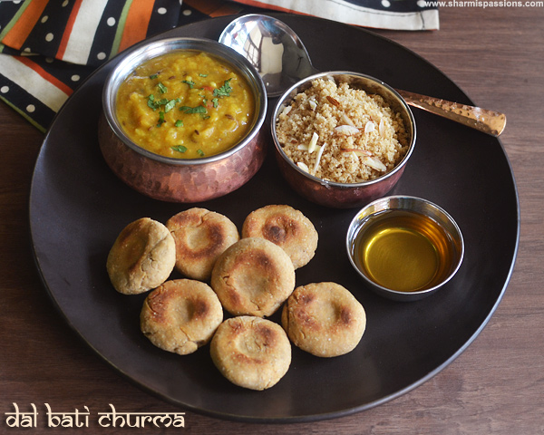

Dal-Baati

Description
Dal baati is one of the main dishes of Rajasthani cuisine, the dish for which the cuisine is known for. The baati is a hard bread made with coarse whole wheat flour, semolina, ghee, besan and flavored with fennel seeds and carom seeds. Baatis can be fried or baked. The origin of baati goes way back to Rawal dynasty where the soldiers would make balls of dough and bury them under the sand and after they would return back from the war the baatis would be completely and nicely baked. Baati became a famous war-time meal. Later, then the combination of dal baati became very famous.
If you have ever been to Rajasthan in the winter months, you will know that this authentic dal baati churma combo is a wonderful way to warm yourself up on a cold day!
Ingredients
For The Dal
- 5 tbsp chana dal (split bengal gram)
- 5 tbsp toovar (arhar) dal
- 5 tbsp green moong dal (split green gram)
- 1 tbsp urad dal (split black lentils)
- salt to taste
- 3 tbsp ghee
- 3 cloves (laung / lavang)
- 2 bayleaves (tejpatta)
- 1 tsp cumin seeds (jeera)
- 2 green chillies
- a pinch of asafoetida (hing)
- 1 tsp garlic (lehsun) paste
- 1 cup finely chopped onions
- 1 cup finely chopped tomatoes
- 1 tsp coriander (dhania) powder
- 1/2 tsp turmeric powder (haldi)
- 1 tbsp chilli powder
- 1/2 tsp garam masala
- 1 tbsp finely chopped coriander (dhania)
For The Baatis
- 1 cup coarse whole wheat flour (jada gehun ka atta)
- 1/2 cup semolina (rava / sooji)
- 2 tbsp besan (bengal gram flour)
- 1/2 cup milk
- 4 tbsp melted ghee
- 1 tsp fennel seeds (saunf)
- 1/4 tsp carom seeds (ajwain)
- salt to taste
- ghee for deep-frying
Steps
For The Dal
- Clean and wash the dals. Combine the dals, 4 cups of water and salt in a pressure cooker, mix well and pressure cook for 3 whistles.
- Allow the steam to escape before opening the lid. Do not drain the water and keep aside.
- Heat the ghee in a deep non-stick kadhai, add the cloves, bayleaves, cumin seeds, green chillies and asafoetida and sauté on a medium flame for a few seconds.
- When the seeds crackle, add the garlic paste and onions and sauté on a medium flame for 2 to 3 minutes.
- Add the tomatoes, coriander powder, turmeric powder, chilli powder and garam masala, mix well and cook on a medium flame for 2 minutes, while stirring occasionally.
- Add the cooked dals (along with the water) and little salt, mix well and cook on a medium flame for 2 to 3 minutes, while stirring occasionally.
- Add the coriander and mix well. Keep aside.
For The Baatis
- Combine all the ingredients in a deep bowl and knead into a semi-stiff dough, without using any water.
- Divide the dough into 8 equal portions and shape each portion into an even sized round.
- Flatten the rounds, make a small indentation in the center of the baatis using your thumb. Keep aside.
- Boil enough water in a deep non-stick kadhai, add all the baatis into the boiling water and cook on a high flame for 15 minutes, while turning them occasionally. Drain and allow them to cool completely.
- Heat the ghee in a deep non-stick kadhai, add 4 baatis at a time and deep-fry till they turn golden brown in colour from all the sides.
- Repeat step 7 to deep-fry the remaining 4 baatis in one more batch. Drain on an absorbent paper and keep aside.